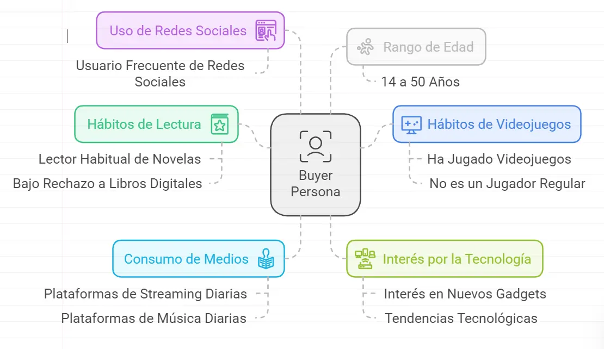

Mercado, Marketing e Ingresos / Buyer Persona y Mercado Potencial
Buyer Persona y Mercado Potencial
Buyer Persona
El Usuario Medio de Entrada consistirá en una persona que ha "oído" hablar del Selbook, ha visto las promociones, la publicidad y siente curiosidad.
- Es un Consumidor habitual de Novelas y, por edad, con muy poco rechazo al Libro Digital.
- Ha jugado a videojuegos, pero no es necesariamente un consumidor medio de videojuegos.
- Es usuario diario de plataformas de Streaming y música.
- Consumidor habitual de Redes Sociales.
- Edad: 14 a 50 años.
- Interés por la tecnología.

Mercado Potencial
Para realizar el estudio de mercado Potencial, haremos una estimación bajista, centrando nuestro Buyer Persona en el consumidor de Libros Digitales y en las ventas de libros digitales de los últimos 5 años.
Fuentes: Bookwire.es; laroussemagazine
Tasa de Mercado Objetivo por Consumidores
- 2019: Aproximadamente 30 millones de consumidores en Estados Unidos.
- 2020: Aumento significativo a 40 millones de consumidores debido a la pandemia.
- 2021: Crecimiento continuo a 45 millones de consumidores.
- 2022: Estabilización con 45 millones de consumidores.
- 2023: Estimación de 46 millones de consumidores.
Tasa de Mercado Objetivo por Unidades Vendidas
- 2019: Aproximadamente 400 millones de unidades vendidas a nivel mundial.
- 2020: Aumento significativo debido a la pandemia, con ventas estimadas en 450 millones de unidades.
- 2021: Continuación del crecimiento, con ventas alrededor de 487 millones de unidades.
- 2022: Las ventas se estabilizaron en aproximadamente 487 millones de unidades.
Mercado Objetivo Actual:
45M de usuarios
Mercado Objetivo Actual:
487M de unidades
Tasa de Penetración
Si nos centramos en el Libro Digital, podemos estimar una tasa de rechazo al Selbook bastante baja. Hablamos de usuarios tecnológicamente alineados que no rechazarían una evolución del libro digital como tampoco rechazaron la evolución desde el libro físico. Por otro lado, el usuario más joven y más alineado con los clips y el videojuego, verían con buenos ojos la evolución hacia un formato más interactivo.
Pero con el fin de realizar una estimación bajista y con el fin de usar datos "conocidos”, usaremos la como Tasa de Penetración del Selbook la misma Tasa de Penetración del Libro Digital en el mercado del Libro Físico.
Tasa de Penetración media del Libro Digital desde 2007 a 2012: 10%
Estimación
Dado la alineación del Libro Digital con el Selbook, un usuario de Libro Digital estará muy abierto a la evolución que propone el Selbook y, después de un periodo inicial de adaptación, consideramos que, al menos, un 60% de los usuarios de Libros Digitales terminarán consumiendo Selbooks al corto plazo.
TAM (Total Addressable Market)
TAM = Población objetivo × Tasa de penetración
TAM 5 primeros años =
45M x 10% = 4.5M de usuarios
TAM Estimado 45M x
60% = 27M de usuarios
Valor de Mercado
Según las estadísticas, el precio medio de compra del libro digital es de 14€ y la frecuencia de compra es de 1.5 libros por mes. Esto nos deja un valor de Mercado del Libro Digital de:
VM libro digital = 45M usuarios x 1.5 uds/mes x 12 meses = 810M€ al año.
Estimación:
El precio medio del Selbook (sin contar con los ingresos de publicidad) varia desde la adquisición de ampliaciones (2-5€), suscripciones (20-50€) y la compra de Stringbook (30-70€). Podemos estimar un Tiket medio de unos 25€, con una frecuencia de compra mensual, haciendo una aproximación con el Libro Digital. El Valor de Mercado Potencial del Selbook podría rondar:
VMe = TAM estimado x 25€/mes = 675M€ al año
Conclusiones
El Selbook es la evolución más natural al Libro Digital, pero también es un producto atractivo para los propios usuarios de Libros Físicos, Videojuegos y consumidores audiovisuales, por lo que en realidad, el Mercado Potencial es mucho mayor.
Hay que añadir que el Selbook, con mucha probabilidad, tendrá un efecto Viral entre los consumidores, algo que se potenciará en las Redes Sociales (internas y externas) y con otras campañas de Marketing. Pero será el propio Usuario quien, boca a boca, provocará ese efecto viral.
El Potencial de Mercado y su valor real debería estar muy por encima de estos cálculos.